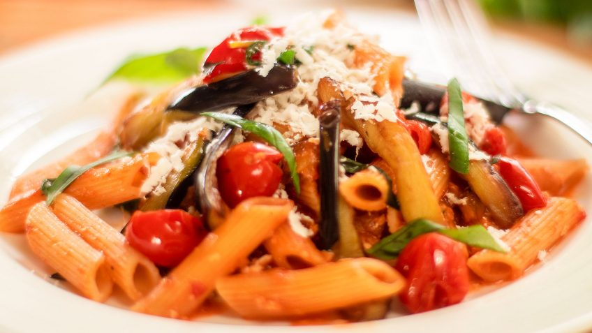

Pasta Alla Norma
Italian dish of pasta and eggplant!
This traditional Sicilian pasta dish of sautéed eggplant
tossed with tomato sauce and topped with ricotta salata
makes for a satisfying vegetarian dinner, and it can be thrown together in under an hour.
Ingredients
- 1 ½ pounds eggplant
- Olive oil as needed (at least 1/2 cup)
- Salt and pepper
- 3 or 4 dried chiles
- 1 ½ pounds tomatoes, chopped (canned are fine; about 1 can)
- 1 teaspoon good dried oregano, or 1 tablespoon fresh
- 1 pound long pasta
- ½ cup chopped parsley or basil
- ½ cup grated ricotta salata (or in a pinch, pecorino Romano)
Preperation
- Slice the eggplant about 1/2 inch thick. Cook in abundant olive oil, without crowding, sprinkling with salt and adding more oil as needed. You will undoubtedly have to cook in batches; take your time and cook until the eggplant is nicely browned and soft. Remove to a plate; do not drain on paper towels. Meanwhile, put a large pot of water to boil and salt it.
- At the end of the cooking the eggplant, the pan will ideally have a couple of tablespoons of oil left. If there’s more or less, drain some off or add a bit. Turn the heat to medium, add the garlic and chiles, and cook until the garlic colors a little bit. Add the tomatoes and oregano, along with some salt and pepper; cook until saucy but not too dry, stirring occasionally.
- Cook the pasta until tender but not mushy. While it’s cooking, cut the eggplant into strips and reheat for a minute in the tomato sauce. Drain the pasta and toss it with the tomato sauce and the eggplant. Taste and adjust the seasoning, then top with the parsley or basil and grated cheese and serve.